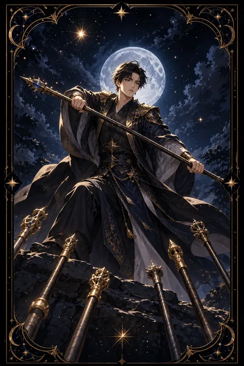

완드 7 카드 — 높은 자리를 지키는 버팀
완드 7 카드 한눈에 보기
완드 7 카드 상징 읽기

동네보살의 카드 그림은 전통 라이더–웨이트 덱의 뜻을 새 그림으로 옮긴 것입니다. 아래 상징 설명은 전통 덱의 그림을 기준으로 합니다.
완드 7에는 언덕 위에 선 남자가 아래에서 솟아오르는 여섯 개의 지팡이에 맞서 지팡이 하나를 휘두르는 모습이 그려져 있습니다. 수적으로는 불리하지만 높은 곳을 차지하고 있어 싸움의 형세는 그에게 유리합니다.
아래에서 올라오는 여섯 지팡이는 경쟁자와 비판과 끊임없는 도전을 상징합니다. 공격하는 사람들의 모습은 보이지 않고 지팡이만 드러나 있어 압박이 어디서 오는지 알기 어려운 상황을 나타내기도 합니다.
남자가 신은 신발이 서로 다른 짝이라는 점도 눈여겨볼 만합니다. 준비할 틈도 없이 급히 나와 자리를 지켜야 했던 긴박함을 보여 줍니다. 단호한 표정과 굳게 버틴 자세는 신념과 용기를 뜻하며 이 카드는 쉽게 물러서지 않는 끈기와 자기 자리를 지키는 힘을 이야기합니다.
완드 7 카드 정방향 뜻
정방향 완드 7은 지금까지 쌓아 온 자리나 신념을 지켜야 하는 시기를 뜻합니다. 경쟁자가 나타나거나 비판과 견제가 이어질 수 있지만 당신은 이미 유리한 위치에 서 있습니다.
이 카드는 끈기와 용기를 강조합니다. 쉽게 물러서지 않고 자신의 입장을 분명히 할 때 입지가 오히려 단단해집니다. 옳다고 믿는 일이라면 다수의 목소리에 흔들리지 않고 버티는 태도가 필요합니다.
다만 모든 도전에 일일이 맞서다 보면 금세 지칠 수 있습니다. 정말 지켜야 할 핵심을 정하고 사소한 다툼은 흘려보내며 힘을 아껴 두세요. 휴식과 회복의 시간을 계획에 넣어 두면 긴 싸움에서도 중심을 잃지 않습니다. 주변의 반대가 거셀수록 처음 이 일을 시작한 이유를 떠올려 보세요. 그 이유가 분명하다면 버티는 힘도 함께 자라납니다.
완드 7 카드 역방향 뜻
역방향 완드 7은 계속되는 압박에 지쳐 물러서고 싶어지는 상태를 보여 줍니다. 여러 방향에서 요구와 비판이 쏟아져 버티는 힘이 바닥나고 포기하고 싶은 마음이 커질 수 있습니다.
다른 한편으로는 지나친 방어를 경고하기도 합니다. 작은 조언이나 질문에도 공격받는다고 느껴 날을 세우면 도우려는 사람까지 멀어질 수 있습니다.
이럴 때는 모든 자리를 지키려는 생각을 내려놓는 것이 도움이 됩니다. 꼭 지켜야 할 것과 양보해도 괜찮은 것을 나누고 혼자 감당하던 부담을 믿을 만한 사람과 나눠 보세요. 잠시 물러나 쉬는 것은 패배가 아니라 다시 일어서기 위한 준비입니다. 힘을 되찾으면 언덕 위의 자리는 여전히 당신의 것입니다. 지치는 자신을 탓하기보다 그만큼 오래 애써 왔다는 사실을 인정해 주는 것도 회복의 시작입니다.
연애에서 완드 7 카드
솔로라면 마음에 드는 사람을 두고 경쟁이 생기거나 주변의 참견이 많아질 수 있습니다. 남의 말에 흔들리기보다 자신의 마음과 기준을 분명히 지키는 것이 좋은 인연을 끌어옵니다. 자신감을 잃지 않고 꾸준히 다가가는 태도가 필요합니다.
연애 중이라면 관계를 지켜 내야 하는 시기입니다. 가족의 반대나 주변의 오해나 제삼자의 개입처럼 외부의 압력이 생길 수 있지만 두 사람이 한편에 서면 넉넉히 버텨 낼 수 있습니다. 그렇더라도 상대의 작은 말에도 방어적으로 반응하면 불필요한 다툼이 생기니 날을 세우기 전에 의도를 먼저 물어보세요. 카드가 뒤집혔다면 관계를 지키느라 지쳐 있을 수 있으니 혼자 짊어지지 말고 상대와 부담을 나누는 대화가 필요합니다. 흔들리지 않는 믿음이 관계를 지키는 가장 큰 방패입니다.
재회·속마음 질문에서 완드 7 카드
재회 질문에서 완드 7이 나오면 다시 만나기까지 넘어야 할 벽이 있다는 뜻입니다. 주변의 반대나 상대의 망설임이나 새로운 경쟁자 같은 장애물이 나타날 수 있습니다. 그래도 진심이 분명하다면 쉽게 물러서지 않는 태도가 흐름을 바꿀 수 있습니다. 다만 상대를 설득하려고 몰아붙이면 오히려 방어적으로 만들 수 있으니 차분한 끈기가 필요합니다. 거꾸로 나온 경우에는 이미 많이 지쳐 있는 상태일 수 있으니 이 관계를 계속 붙들고 싶은지 조용히 자기 마음을 확인해 보세요. 장애물을 넘는 과정에서 서로를 향한 마음이 얼마나 깊은지 확인하게 되기도 합니다. 버티는 동안에도 자신의 생활을 잘 돌보면서 조급함 대신 꾸준함으로 다가가 보세요.
일·금전에서 완드 7 카드
일과 직장에서는 자리를 넘보는 경쟁자나 결과를 둘러싼 비판이 이어지는 흐름입니다. 당신의 전문성과 실적은 충분한 근거가 되니 흔들리지 말고 입장을 분명히 밝혀 보세요. 모든 요구를 받아들이기보다 우선순위를 정해 핵심 업무에 힘을 모으는 편이 현명합니다.
돈 문제에서는 지켜 온 자산을 노리는 권유나 지출 요구가 몰려들 수 있습니다. 원칙을 세워 두고 불필요한 요청에는 단호하게 선을 긋는 편이 안전합니다. 무리한 경쟁에 휘말려 비용을 늘리기보다 지킬 것을 지키는 방향이 이롭습니다. 비판 가운데 귀담아들을 만한 조언은 받아들이고 근거 없는 공격은 흘려보내는 분별력이 입지를 지켜 줍니다.
완드 7 카드는 예일까 아니오일까
도전이 몰려오지만 유리한 자리에 서 있는 카드여서 끝까지 버틴다면 이룰 수 있다는 조건부의 답입니다. 뒤집혀 있다면 지쳐 물러설 위험이 커져 아니오 쪽에 가까워집니다.
자주 묻는 질문
완드 7 카드 역방향은 나쁜 뜻인가요?
역방향 완드 7은 계속되는 압박에 지쳐 물러서고 싶어지는 상태를 보여 줍니다. 여러 방향에서 요구와 비판이 쏟아져 버티는 힘이 바닥나고 포기하고 싶은 마음이 커질 수 있습니다.
완드 7 카드가 연애 질문에 나오면요?
솔로라면 마음에 드는 사람을 두고 경쟁이 생기거나 주변의 참견이 많아질 수 있습니다. 남의 말에 흔들리기보다 자신의 마음과 기준을 분명히 지키는 것이 좋은 인연을 끌어옵니다. 자신감을 잃지 않고 꾸준히 다가가는 태도가 필요합니다.
타로 카드는 어떻게 뽑나요?
타로 카드 페이지에서 78장을 섞으면 그중 22장이 펼쳐집니다. 마음이 가는 세 장을 고르면 과거·현재·미래 자리에 놓이고, 한 장씩 뒤집어 자리와 방향에 맞는 풀이를 읽습니다. 정방향과 역방향은 섞는 순간 정해집니다.